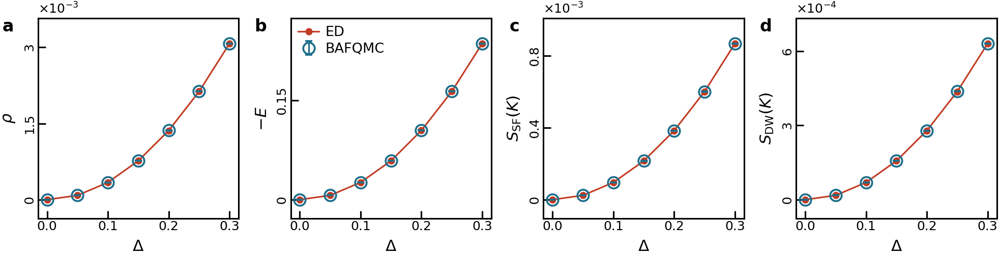
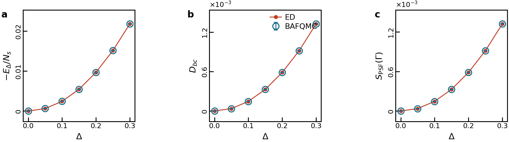
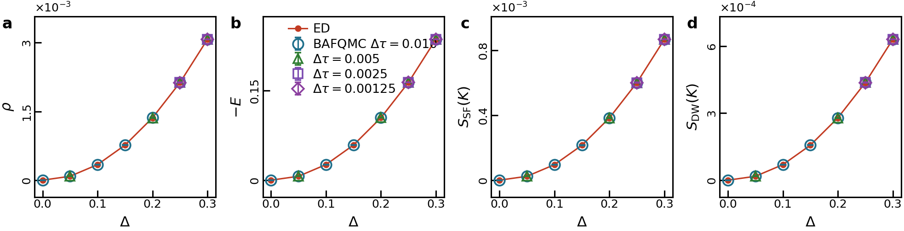

\(\Delta\) 符号与 pairing BAFQMC benchmark 的规范等价性
核心结论。 现有 pairing benchmark 使用的物理模型是 \(+\Delta\sum_i(b_i^+c_i^+ + b_i c_i)\)。全局变换 \(c_i\mapsto -c_i\) 是由 \(U_c=\exp(i\pi N_c)\) 实现的合法幺正规范变换， 它把 \(+\Delta\) convention 映射到 \(-\Delta\) convention。这个变换不需要在 Monte Carlo 程序中显式执行，因为每个辅助场配置的 Nambu 传播矩阵只是做相似变换；trace 不变， determinant 表达式和 local update ratio 在相同的连续 metaplectic 分支约定下随之不变。
因此，仅从 \(\Delta\) 前的符号和规范变换是否显式实现这一点看，没有理由判定现有 \(\Delta>0\) benchmark 是错的，也没有必要只为符号 convention 重跑一遍。若论文改写成 \(-\Delta(b^+c^+ + bc)\) convention，主图中的密度、能量、\(S_{\rm SF}\)、\(S_{\rm DW}\) 仍应与当前数据等价；只有 odd under \(c\to -c\) 的 pairing amplitude 会反号。
1. 问题与模型 convention
pairing benchmark 报告和 ED/DQMC 代码采用同一个物理 Hamiltonian convention：
grand-canonical 采样使用 \(H_\mu=H_{\rm phys}-\mu(N_b+N_c)\)。在报告的主参数窗口中， \(U_1=0\)、\(U_2=1\)、\(\beta=4\)、\(\mu=-5\)，并扫描 \(\Delta=0,0.05,\ldots,0.30\)。
源码层面的对应关系是明确的。ED 脚本用 QuSpin 的 ++ 和 --
项构造 \(+\Delta(b^+c^+ + bc)\)。Fortran BAFQMC 在
\(\chi=(b,c,b^+,c^+)^T\) 的四分量 Nambu convention 下，构造的 commutator matrix pairing block 为
这正是 pairing 报告和 docs/physics.md 中记录的 convention。
2. 规范变换是合法的
定义 \(N_c=\sum_i n_{c,i}\) 和
它在 Fock 空间上是幺正算符，并且
因此，\(c\) flavor 的 hopping、密度相互作用、化学势项全部不变，pairing 项反号：
这说明 \(+\Delta\) 和 \(-\Delta\) 两个 Hamiltonian 是幺正等价的同一个物理谱问题。 这个等价不依赖晶格是否受挫，也不依赖辅助场取值。
3. 为什么程序不需要显式做规范变换
对每个辅助场配置，密度 HS 项只含 \(n_b\pm n_c\)，所以也在 \(U_c\) 下不变。令
表示四分量 Nambu basis \((b,c,b^+,c^+)^T\) 中的 \(c\to -c\) 变换。若 \(A_\ell(+\Delta)\) 和 \(A_\ell(-\Delta)\) 是同一辅助场配置在两个 convention 下的 commutator matrix，则
整个 imaginary-time product 也只是相似变换：
于是
因此 BAFQMC 权重、local determinant ratio 和接受率不因是否显式换到 \(\tilde c=-c\) basis 而改变。非 determinant 的 HS Gaussian measure 和常数因子也不变，因为辅助场只耦合到密度。 正文中把 \(+\Delta\) convention 通过 \(\tilde c=-c\) 写成 RP-positive block， 是在证明 sign-free structure；代码在原始 basis 里计算，是同一个 trace 的另一组坐标表示。
4. 与 RP block form 的关系
Monte Carlo 采样的是 \(e^{-\delta\tau H}\)。为避免把时间步长和 pairing amplitude 都写作 \(\Delta\)，本节临时用 \(\delta\tau\) 表示 imaginary-time step。对于物理 convention \(H_\Delta=+\Delta(b^+c^+ + bc)\)，原始 basis 中的 pairing generator 是
设 \(\tilde c_i=-c_i\)，则
所以同一个 generator 在 gauged basis 中成为
在论文的 RP Nambu ordering \((\mathbf b,\mathbf b^+,\tilde{\mathbf c},\tilde{\mathbf c}^+)^T\) 中， 这对应正半定的 reflected anomalous block
这一步是证明工具，不是额外的数值算法步骤。
5. 代码与数据证据
主图 benchmark

这张图说明 ED 与 BAFQMC 在同一个 \(+\Delta\) convention 下比较。主图量都是 \(c\to -c\) 规范偶的量，或者是 Hamiltonian 自身的能量，因此换成 \(-\Delta\) convention 后曲线不应改变。
pairing-sector 诊断

其中 pairing amplitude \(P_\Delta=N_s^{-1}\sum_i\langle b_i^+c_i^+ + b_i c_i\rangle\) 在 \(c\to -c\) 下会反号。pairing energy \(\Delta P_\Delta\) 与 Hamiltonian convention 一起变换，物理能量不变。因此 pairing amplitude 的符号不应单独用于判断 benchmark 是否错。
时间步长诊断

高 \(\Delta\) 点存在可分辨的微小系统误差，但报告中的诊断指向 Trotter step 和 ED cutoff floor。 这类误差与 \(+\Delta\) versus \(-\Delta\) convention 无关。
6. Phase 和 branch 诊断
Fortran local update 使用 det(Pblock)**(-0.5d0)。如果实际路径存在隐藏相位或跨越错误分支，
最直接的症状之一是 local ratio 的 phase 统计异常。production run 的 info.txt 给出：
| \(\Delta\) | mean abs arg proposed | mean abs arg accepted | branch \(\pi\) fraction |
|---|---|---|---|
| 0.00 | \(5.047\times10^{-18}\) | \(4.860\times10^{-18}\) | 0 |
| 0.05 | \(4.404\times10^{-17}\) | \(4.243\times10^{-17}\) | 0 |
| 0.10 | \(6.013\times10^{-17}\) | \(5.794\times10^{-17}\) | 0 |
| 0.15 | \(4.184\times10^{-17}\) | \(4.031\times10^{-17}\) | 0 |
| 0.20 | \(3.687\times10^{-17}\) | \(3.553\times10^{-17}\) | 0 |
| 0.25 | \(1.294\times10^{-15}\) | \(1.317\times10^{-15}\) | 0 |
| 0.30 | \(5.012\times10^{-17}\) | \(4.830\times10^{-17}\) | 0 |
这些数值在双精度舍入误差量级，支持当前 production 数据没有出现 hidden phase problem 或 branch-\(\pi\) crossing。严格的数学正定性仍应在论文中通过 RP/gauge 等价来表述，而不是只依赖这个数值诊断。
7. 对论文写法和是否重跑的建议
建议保留报告 convention，即在正文物理 Hamiltonian 中写
随后在 sign-free 结构说明中写：通过全局规范变换 \(\tilde c_i=-c_i\)，同一个 imaginary-time generator 具有 \(F=(\Delta\tau\Delta/2)I_{2N_s}\succeq0\) 的 RP block form。这样的写法同时满足两个要求： 物理 Hamiltonian 与 benchmark 报告一致，sign-free proof 在最透明的 RP-positive convention 下进行。
当前没有必要因为 \(\Delta\) 符号重跑 benchmark。若将来为了审稿或读者习惯改用 \(-\Delta\) Hamiltonian convention，现有主图数据仍可作为等价数据使用，但需要同步说明 pairing amplitude 的符号 convention。
8. 复现索引
| 项目 | 路径或文件 | 用于本报告的内容 |
|---|---|---|
| pairing production report | /mnt/c/Users/Newton/Documents/LigroupIOP/2408_bosonSignProblem/code_bosonDQMC_paring/data/20260605_pairing_delta_mu_m5_production/publication_report/report_pairing_delta_mu_m5_production_zh.html | Hamiltonian convention, benchmark parameters, figure interpretation |
| physics notes | /mnt/c/Users/Newton/Documents/LigroupIOP/2408_bosonSignProblem/code_bosonDQMC_paring/docs/physics.md | Nambu basis, commutator matrix, determinant ratio, Green-function block table |
| Fortran kinetic/pairing matrix | src/non_interact.f90 | \(A_{b,c^+}=A_{c,b^+}=+\Delta\), \(A_{b^+,c}=A_{c^+,b}=-\Delta\) |
| Fortran local update | src/localU.f90 | local determinant ratio \(\det(P)^{-1/2}\), phase tracking |
| ED implementation | benchmarks/ed/ed_pairing_triangle_general.py | QuSpin ++/-- terms with positive \(\Delta\) |
| production comparison CSV | summary/comparison_observables.csv | ED and BAFQMC numerical comparison |
| run info files | inputs/triangle_pairing_delta_3x3_D*_mum5_b4/info.txt | phase and branch diagnostics |
本报告是临时研究备忘，不是论文正文。论文正文应只保留必要的物理 Hamiltonian、sign-free block structure 和对 SM 的引用。